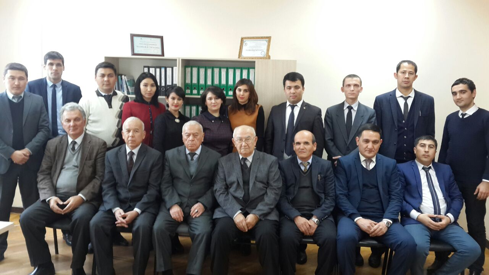

Head of department Axmedova Oydin Pulatovna Visit time Everyday, time 2 p.m - 4 p.m Phone number: (0 371) 238-65-09 |
About department
In order to ensure the fulfillment of the objectives of the plan for the first half of 2016 (10 annex), the work of the meeting of the Presidium of the Cabinet of Ministers of the Republic of Uzbekistan (No. 5 of January 25, 2016), and the proposal of the Ministry for the Development of Information Technology and Communications of the Republic of Uzbekistan, Information Security "and specialized departments within this faculty, as well as on the approval of this proposal in the Technical Council on ICT Security of the Ministry for the Development of Information Technology and Co (under No. 3 of July 18, 2016) and by the decision of the Council of the Tashkent University of Information Technologies (No. 1 (661), August 29, 2016), the Faculty "Information Security" was established with specialized departments "Ensuring Information Security" and "Cryptology and Discrete Mathematics" on the basis of the "Information Security" department of the faculty "Computer Engineering".
The Department of Information Security began its activity in September 2006 under the leadership of Doctor of Technical Sciences, prof. Karimova MM, for the purpose of training bachelors in the educational area "Information Security" and masters in the specialty "Information Security, Cryptography and Cryptanalysis". Until September 2016 the department was headed by Doctor of Technical Sciences, prof. Karimov M.M. and Ph.D., Assoc. Yusupov S.Yu. and Ph.D. Irgasheva Durdona Yakubdzhanovna. During the last 10 years, the faculty of the department has achieved certain successes in scientific research, educational, methodological, spiritual and educational work. Not only the staff of the department (Irgasheva D.Ya., Tashev KA), but also specialists working in the organizations of the sector (Khasanov Kh.P.), whose scientific supervisors were professors of the chair Ganiev S.K., defended their candidate works . and Karimov M.M.